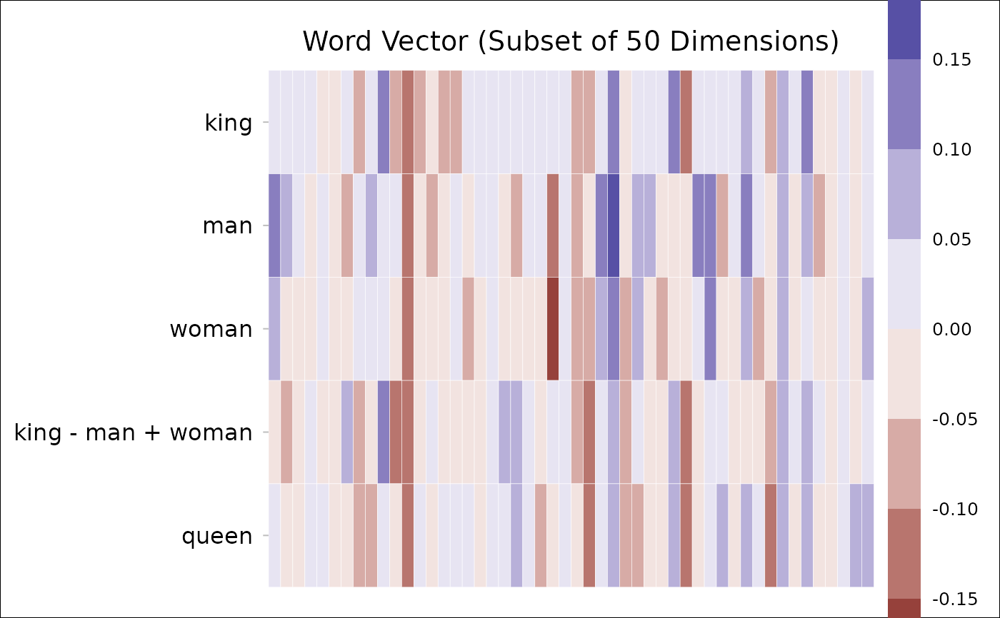

Visualize word vectors.
Arguments
- dt
A
data.tablereturned byget_wordvecsor loaded bydata_wordvec_load.- dims
Dimensions to be plotted (e.g.,
1:100). Defaults toNULL(plot all dimensions).- step
Step for value breaks. Defaults to
0.05.- border
Color of tile border. Defaults to
"white". To remove the border color, setborder=NA.
Download
Download pre-trained word vectors data (.RData):
https://psychbruce.github.io/WordVector_RData.pdf
Examples
d = data_wordvec_normalize(demodata)
#> √ All word vectors have now been normalized.
dt = get_wordvecs(d, cc("king, queen, man, woman"))
dt[, QUEEN := king - man + woman]
#> king queen man woman QUEEN
#> 1: 0.043406531 0.001733313 0.14116230 0.09156568 -0.006190088
#> 2: 0.010262695 -0.047404412 0.05663379 -0.02905080 -0.075421897
#> 3: 0.002965276 -0.022895979 0.01500378 -0.03879578 -0.050834289
#> 4: 0.048116999 0.040793453 -0.03592460 -0.04045076 0.043590844
#> 5: -0.008832774 0.043534590 0.03888312 0.04449576 -0.003220136
#> ---
#> 296: -0.061239879 -0.013624785 -0.02768308 0.04063452 0.007077723
#> 297: -0.096234342 0.055466349 -0.03613580 0.04467952 -0.015419019
#> 298: -0.029610726 -0.015478958 -0.13101869 -0.03125744 0.070150521
#> 299: 0.031461353 0.053853896 -0.03465654 0.02463828 0.090756176
#> 300: 0.086812717 0.050951612 0.00908675 -0.01107800 0.066647966
dt[, QUEEN := QUEEN / sqrt(sum(QUEEN^2))] # normalize
#> king queen man woman QUEEN
#> 1: 0.043406531 0.001733313 0.14116230 0.09156568 -0.005502999
#> 2: 0.010262695 -0.047404412 0.05663379 -0.02905080 -0.067050205
#> 3: 0.002965276 -0.022895979 0.01500378 -0.03879578 -0.045191776
#> 4: 0.048116999 0.040793453 -0.03592460 -0.04045076 0.038752340
#> 5: -0.008832774 0.043534590 0.03888312 0.04449576 -0.002862707
#> ---
#> 296: -0.061239879 -0.013624785 -0.02768308 0.04063452 0.006292108
#> 297: -0.096234342 0.055466349 -0.03613580 0.04467952 -0.013707536
#> 298: -0.029610726 -0.015478958 -0.13101869 -0.03125744 0.062363942
#> 299: 0.031461353 0.053853896 -0.03465654 0.02463828 0.080682407
#> 300: 0.086812717 0.050951612 0.00908675 -0.01107800 0.059250164
names(dt)[5] = "king - man + woman"
plot_wordvec(dt[, c(1,3,4,5,2)], dims=1:50)
dt = get_wordvecs(d, cc("boy, girl, he, she"))
dt[, GIRL := boy - he + she]
#> boy girl he she GIRL
#> 1: 0.083967962 0.047750749 0.109257091 0.04049595 0.015206823
#> 2: 0.058881966 0.001287155 0.072653299 -0.01454260 -0.028313934
#> 3: 0.033273650 0.022193947 -0.010884081 -0.05615750 -0.011999766
#> 4: -0.045990576 -0.026229304 -0.016638191 -0.01778671 -0.047139098
#> 5: 0.005705206 0.008532822 0.017608756 0.05861853 0.046714981
#> ---
#> 296: -0.019162800 0.023538951 0.061006509 0.03311285 -0.047056460
#> 297: -0.026479563 0.023034833 0.002339808 0.09754833 0.068728958
#> 298: -0.094768644 -0.029928238 -0.098165154 0.01073948 0.014135985
#> 299: -0.036757568 -0.003089446 0.069880173 0.11365708 0.007019343
#> 300: 0.048429498 0.012946613 -0.090954911 -0.05392007 0.085464341
dt[, GIRL := GIRL / sqrt(sum(GIRL^2))] # normalize
#> boy girl he she GIRL
#> 1: 0.083967962 0.047750749 0.109257091 0.04049595 0.011744750
#> 2: 0.058881966 0.001287155 0.072653299 -0.01454260 -0.021867820
#> 3: 0.033273650 0.022193947 -0.010884081 -0.05615750 -0.009267829
#> 4: -0.045990576 -0.026229304 -0.016638191 -0.01778671 -0.036407138
#> 5: 0.005705206 0.008532822 0.017608756 0.05861853 0.036079578
#> ---
#> 296: -0.019162800 0.023538951 0.061006509 0.03311285 -0.036343314
#> 297: -0.026479563 0.023034833 0.002339808 0.09754833 0.053081725
#> 298: -0.094768644 -0.029928238 -0.098165154 0.01073948 0.010917705
#> 299: -0.036757568 -0.003089446 0.069880173 0.11365708 0.005421279
#> 300: 0.048429498 0.012946613 -0.090954911 -0.05392007 0.066007034
names(dt)[5] = "boy - he + she"
plot_wordvec(dt[, c(1,3,4,5,2)], dims=1:50)

if (FALSE) {
dt = get_wordvecs(d, cc("
male, man, boy, he, his,
female, woman, girl, she, her"))
p = plot_wordvec(dt, dims=1:100)
# if you want to change something:
p + theme(legend.key.height=unit(0.1, "npc"))
# or to save the plot:
ggsave(p, filename="wordvecs.png",
width=8, height=5, dpi=500)
}